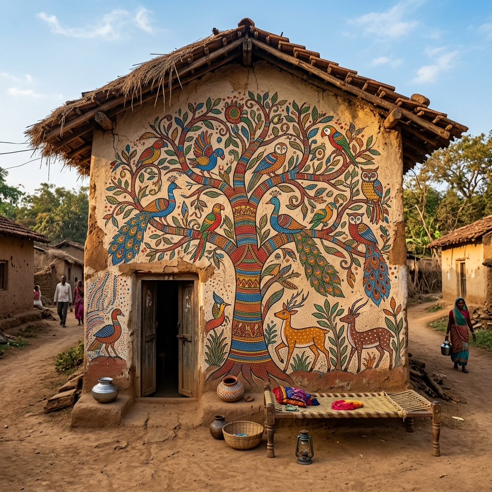

Vital Certificates
Apply online for official certificates, land possession records (Adangal/1B ROR), income document validations, and birth registrations.
- Adangal Land Records
- Birth Certificates
- Income & Caste Papers
WELCOME TO SEETHARAMAPURAM TANDA
Official Civic & Welfare Portal of the Gram Panchayat
Connecting rural citizens with transparent administration, immediate livelihood resources, vital certificates, and daily community trackers for collective resilience.
CITIZEN SERVICES & BASIC LIVELIHOOD HUB
Quickly access essential government document requests, agricultural planning mechanisms, and sub-center medical utilities.
Apply online for official certificates, land possession records (Adangal/1B ROR), income document validations, and birth registrations.
Access sowing recommendations, submit seed & fertilizer subsidy requests, and compute dry-spell irrigation schedules based on soil health.
Check health sub-center operational status, calendar of immunisation camps, emergency medical transport schedules, and nearby medical directories.
DEVELOPMENT MATRIX & COMMUNITY CHALLENGES
View interactive geotags for resource plantations and trace community efforts in water conservation, employment, and schooling access.
📍 Tracked Assets: 37+ Geotagged plantations for climate resilience & shade preservation.
Our panchayat systematically addresses core challenges to build long-term community resilience, utilizing transparent local resources and budgets.
Minimising rain dependency through community rainwater harvesting, smart borewell recharge grids, and adaptive rationing schedules.
Direct local updates on MGNREGS muster rolls, rural labor needs, vocational workshops, and youth agricultural skill training.
Pan-village student transit support, transport fare subventions, and primary school attendance initiatives for outer hamlets.
CULTURAL GROUNDING: IDENTITY & SIMPLICITY
Preserving the traditional lifestyle, close-knit unity, and deep artistic roots of our Banjara and Lambadi community heritage.

Visual beautification preserving local tribal folklore, painting methods, and animal-centric narratives on village surfaces.

Showcasing traditional mud-insulated and clay-tiled homes designed naturally for heat dispersion and seasonal comfort.

Honoring the generational heritage of Lambadi/Banjara artisans, utilizing vibrant threads, mirror inserts, and shells.
SMART VILLAGE PILLARS & SDG
Our Gram Panchayat tracks progress across core sustainability areas to ensure long-term community welfare and eco-social resilience.
Medical sub-center readiness, regular sanitation drives, digital health record management, and clean drinking water audits.
All-weather paved roads, community center enhancements, solar street grid integration, and digital Gram Panchayat hubs.
Community rainwater catchment structures, check dam status audits, and smart borewell groundwater level monitoring.
Off-grid solar grid operation, LED street lights, energy efficiency audits, and bio-gas grid initiatives.
Zero-plastic packaging policies, waste sorting centers (dry/wet sorting), and local eco-materials promotion.
Social forestry tree plantation coordinates audits, climate-resilient crop selections, and organic compost networks.
COMMUNITY CORNER & PANCHAYAT TRANSPARENCY
Stay informed about current notices, general statistics, and civic planning updates of Seetharamapuram Tanda.
Panchayat approved procurement of solar roofing for the new Bus Stand shelter. Construction of the digital lab at the ZP High School has reached 85% completion, with inaugurations expected next month.
An emergency Gram Sabha is convened this Tuesday at 10 AM at the Panchayat Office to finalize rainwater harvesting schedules and check dry-spell borewell rationing limits.
Medical officers from the Mandal Hospital will conduct a free health check-up, pediatric check, and vaccine drive at the local primary school this Saturday from 9 AM to 4 PM.
The student travel allowance for high school transit is approved. Eligible parents can download certificate applications and submit records to receive allowances.
Percentage of village households reporting basic amenities.
Seetharamapuram Tanda pridefully safeguards its unique Banjara identity. From colorful mirror costumes and folk songs to tribal self-governance traditions, we blend historical values with sustainable community improvements.
COMMON QUERIES
Quick answers on civic documents, application wait times, and direct portal usage guidelines.